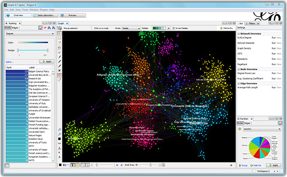
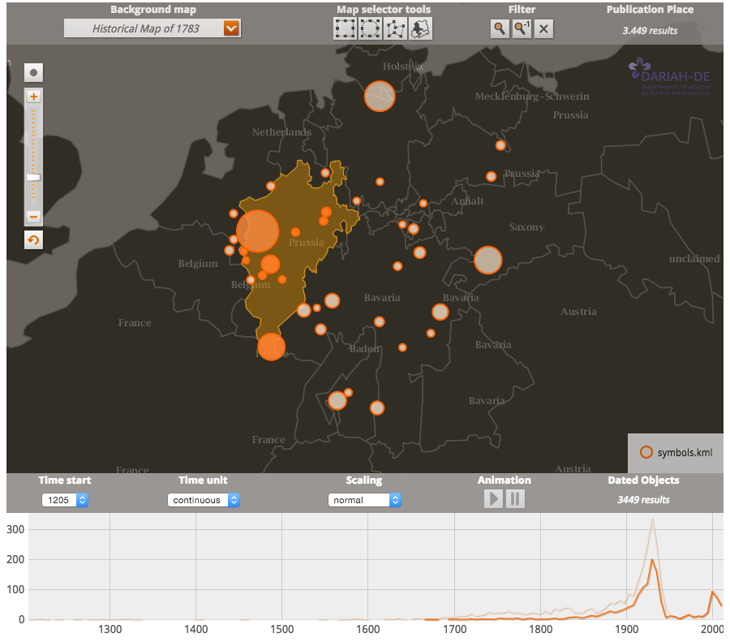

<!doctype html>
<html lang="en">
<head>
<meta charset="utf-8">
<!-- CUSTOMIZE THIS! -->
<title>Einführung in die Digital Humanities</title>
<meta name="author" content="Christof Schöch">
<!-- END -->
<meta name="description" content="Slides">
<meta name="apple-mobile-web-app-capable" content="yes">
<meta name="apple-mobile-web-app-status-bar-style" content="black-translucent">
<meta name="viewport" content="width=device-width, initial-scale=1.0, maximum-scale=1.0, user-scalable=no, minimal-ui">
<link rel="stylesheet" href="css/reveal.css">
<link rel="stylesheet" href="css/theme/simple.css" id="theme">
<!-- Code syntax highlighting -->
<link rel="stylesheet" href="lib/css/zenburn.css">
<!-- Printing and PDF exports -->
<script>
var link = document.createElement( 'link' );
link.rel = 'stylesheet';
link.type = 'text/css';
link.href = window.location.search.match( /print-pdf/gi ) ? 'css/print/pdf.css' : 'css/print/paper.css';
document.getElementsByTagName( 'head' )[0].appendChild( link );
</script>
<!--[if lt IE 9]>
<script src="lib/js/html5shiv.js"></script>
<![endif]-->
</head>

<body>
<div class="reveal">
<div class="slides">
<section data-markdown="" data-separator="^\n---\n" data-separator-vertical="^\n--\n" data-charset="utf-8" data-background-image="img/basics/uni-trier-mini.png" data-background-size="50px" data-background-position="top right">
<script type="text/template">

## Quantitative Textanalyse 1: Stilometrie
<hr/>
<br/>
<br/>Vorlesung *Einführung in die Digital Humanities*
<br/>MSc Digital Humanities | Wintersemester 2019/20
<br/>
<br/>Prof. Dr. Christof Schöch
<br/>
<br/>
<hr/>
<br/>


---
# Einstieg

--
## Semesterüberblick

<small>

* 29.10.: Digital Humanities im Überblick
* 05.11.: Digitalisierung: Text und Bild
* 12.11.: Grundbegriffe des Programmierens
* 19.11.: Datenmodellierung 1: Modellierung
* 26.11.: Datenmodellierung 2: Datenbanken
* 03.12.: Datenmodellierung 3: Text, Markup, XML
* 10.12.: Digitale Edition
* 17.12.: Geschichte der Digital Humanities
* 21.12.-5.1.: *Weihnachtspause*
* 07.01.: Informationsvisualisierung
* 14.01.: Natural Language Processing
* **21.01.: Quantitative Analyse 1: Stilometrie**
* 28.01.: Quantitative Analyse 2: Superv. Machine Learning
* 04.02.: Open Humanities
* 11.02.: Klausurtermin

</small>


--
## Sitzungsüberblick
<br/>
1. Quantitative Textanalyse: Einführung
2. Werkzeuge und Tools im Überblick
3. Stilometrie (Textähnlichkeit)


---
# 1. Quantitative Textanalyse: Überblick

--
## Anwendungsbereiche 
<br/>
* Autorschaftsattribution <!-- .element: class="fragment" data-fragment-index="1" -->
* Gattungsstilistik <!-- .element: class="fragment" data-fragment-index="2" -->
* Netzwerkanalyse <!-- .element: class="fragment" data-fragment-index="3" -->
* Inhaltsanalyse (Begriffe, Topics) <!-- .element: class="fragment" data-fragment-index="4" -->
* Automatische Kartierung <!-- .element: class="fragment" data-fragment-index="5" -->
* Extraktion von Zeitstrukturen <!-- .element: class="fragment" data-fragment-index="6" -->
* Erkennung erzähltheoretischer Kategorien <!-- .element: class="fragment" data-fragment-index="7" -->
* uvm. <!-- .element: class="fragment" data-fragment-index="7" -->

--
## Grundlegende Verfahren
<br/>
* Suche nach Mustern <!-- .element: class="fragment" data-fragment-index="1" -->
* Kontrastive Analyse <!-- .element: class="fragment" data-fragment-index="2" -->
* Gruppen ähnlicher Texte entdecken <!-- .element: class="fragment" data-fragment-index="3" -->
* Verteilungen und Entwicklungen finden <!-- .element: class="fragment" data-fragment-index="4" -->
* Informationen explizit machen <!-- .element: class="fragment" data-fragment-index="5" -->
* Dimensionsreduktion <!-- .element: class="fragment" data-fragment-index="6" -->
* Texte klassifizieren <!-- .element: class="fragment" data-fragment-index="7" -->


--
## Perspektiven der digitalen Textanalyse
<br/>
* Quantitative vs. qualitative Verfahren <!-- .element: class="fragment" data-fragment-index="1" -->
* Informationsextraktion vs. Datenvisualisierung <!-- .element: class="fragment" data-fragment-index="2" -->
* GUI vs. CLI <!-- .element: class="fragment" data-fragment-index="3" -->
* Klassifikation vs. Clustering <!-- .element: class="fragment" data-fragment-index="4" -->


--
## Zwei Typen von ML
|unüberwacht |überwacht |
|-----------|---------|
|Clustering|Klassifikation|
|Bilden von Gruppen|Zuordnung zu Klassen|
|keine Klassen|vorher bekannte Klassen|
|ein Datensatz|Training/Test/Anwendung|
|eher explorativ|hypothesengeleitet|
|Evaluation möglich|Evaluation leicht|
|Topic Modeling<br/>PCA, CA|Annotation<br/>OCR, NER|


---
# 2. Werkzeuge 

--
## Natural Language Processing: NLTK
</img>
<p>http://www.nltk.org; Alternative: TreeTagger</p>

--
## Maschinelles Lernen: scikit-learn
</img>
<p>http://scikit-learn.org</p>

--
## Korpusanalyse: TXM
</img>
<p>http://textometrie.ens-lyon.fr; Alternative: Antconc</p>

--
## Principal Components Analysis
</img>
<p>Diverse Tools: stylo, Python, etc.</p>

--
## Topic Modeling: MALLET 
</img>
<p>http://mallet.cs.umass.edu/topics.php; Alternative: Gensim</p>

--
## Stilometrie: stylo for R 
</img>
<p>https://sites.google.com/site/computationalstylistics/</p>

--
## Netzwerkanalyse: Gephi 
</img>
<p>https://gephi.org/; Alternative: networkX</p>

--
## Kartierung: DARIAH Geobrowser
</img>
<p>https://de.dariah.eu/geobrowser; Alternative: folium</p>


---
# 3. Stilometrie

--
## Stilometrie: Definition
<br/>
>Die Stilometrie ist eines von mehreren Verfahren, die dem Bereich der quantitativen Textanalyse zugerechnet werden können. Der Begriff Stilometrie bezeichnet dabei computergestützte Verfahren der Erhebung lexikalischer bzw. stilistischer Merkmale und ihrer Häufigkeiten in Texten, die Nutzung dieser Merkmale und Häufigkeiten als Indikatoren für die mehr oder weniger große Ähnlichkeit von Texten, sowie das Clustering oder die Klassifikation von Texten auf Grundlage dieser Ähnlichkeit.

--
## Anwendungsfälle
<br/>
* Shakespeare vs. Zeitgenossen <!-- .element: class="fragment" data-fragment-index="1" -->
* J.K. Rowling, "The Cuckoo's Calling" <!-- .element: class="fragment" data-fragment-index="2" -->
* Elena Ferrante <!-- .element: class="fragment" data-fragment-index="3" -->
* uvm.

--
## Stilometrie "step-by-step" (1)
</img>
<p>Bildquelle: Steffen Pielström in Evert et al. 2017</p>

--
## Stilometrie "step-by-step" (2)
<br/> 
1. Ausgangspunkt: Textsammlung in XML-TEI. 
2. Vorbereitung der Texte: Text extrahieren, Tokenisierung 
3. Berechnung der relativen Häufigkeiten jedes Wortes in jedem Text: => Merkmals-Matrix (Text als Wortvektor) 
4. Feature-Auswahl: bspw. Anzahl der häufigsten Wörter
5. Feature-Skalierung, bspw. Berechnung der z-scores: <br/>=> skalierte Merkmals-Matrix

--
## Stilometrie "step-by-step" (3)
<br/> 
6. Anwendung eines Distanz-Maßes auf die Text-Vektoren: <br/>=> Distanz-Matrix
7. Transformation in eine hierarchische Struktur durch <br/>Cluster Analyse: => Linkage Matrix
8. Visualisierung der Linkage Matrix: => Dendrogramm
9. Interpretation des Dendrogramms: => Aussage


--
## Textsammlung (Metadaten)
<br/>
</img>
<p>Drei Autoren: Thomas und Pierre Corneille sowie Racine</p>

--
## Relative Häufigkeiten
</img>

--
## Standardisierung (z-scores)
</img>
<p></p>

--
## Distanzmaße
</img>
<p>(Quelle: Digital Humanities: eine Einführung)</p>


--
## Relative Häufigkeiten
</img>

--
## Mittelwert-Normalisierung
</img>

--
## Z-Scores (Standardisierung)
</img>

--
## Distanz-Matrix
<br/>
</img>
<p></p>

--
## Linkage Matrix
<br/>
</img>
<p></p>

--
## Dendrogramm
</img>
<p></p>

--
## Anwendungsbeispiel
</img>
<p>(26 Theaterstücke; 5 Autoren; Vers und Prosa)</p>


---
# Abschluss

--
## Fragen?

--
## Lektürehinweise
<small>
<br/>
* Christof Schöch, "Quantitative Analyse", in: *Digital Humanities: Eine Einführung*. Hrsg. von Fotis Jannidis, Hubertus Kohle, Malte Rehbein. Stuttgart: Metzler.
<br/>
<br/>
**Weitere Empfehlungen**
* Jannidis, Fotis (2010). "Methoden der computergestützten Textanalyse". _Methoden der literatur- und kulturwissenschaftlichen Textanalyse_, hrsg. von A.  Nünning und V. Nünning. Stuttgart & Weimar: Metzler, S. 109–32.
<br/>
<br/>
**Darüber hinaus**
* Alpaydin, E. (2010). _Introduction to Machine Learning_. 2nd ed. Cambridge, Mass: MIT Press.
* Ramsay, Stephen (2011). _Reading Machines : Toward an Algorithmic Criticism_. Urbana  Ill.: University of Illinois Press.

</small>

--
## Nächste Sitzung
<br/>
* 18.1.2019: "Quantitative Analyse 2: Überwachte Verfahren"


---
<br/>
<br/>
<br/>
<br/>
<br/>Christof Schöch, 2019
<br/>http://www.christof-schoech.de
<br/>
<hr/>
Lizenz: [Creative Commons Attribution 4.0](https://creativecommons.org/licenses/by/4.0/)
<br/>


</script>

<!-- DON'T TOUCH UNLESS YOU KNOW WHAT YOU'RE DOING :-) -->
</div>
<script src="lib/js/head.min.js"></script>
<script src="js/reveal.js"></script>
<script>
// Full list of configuration options available at:
// https://github.com/hakimel/reveal.js#configuration
Reveal.initialize({
    controls: true,
    progress: true,
    history: true,
    center: true,
    transition: 'slide', // none/fade/slide/convex/concave/zoom
    // Optional reveal.js plugins
    dependencies: [
        { src: 'lib/js/classList.js', condition: function() { return !document.body.classList; } },
        { src: 'plugin/markdown/marked.js', condition: function() { return !!document.querySelector( '[data-markdown]' ); } },
        { src: 'plugin/markdown/markdown.js', condition: function() { return !!document.querySelector( '[data-markdown]' ); } },
        { src: 'plugin/highlight/highlight.js', async: true, callback: function() { hljs.initHighlightingOnLoad(); } },
        { src: 'plugin/zoom-js/zoom.js', async: true },
        { src: 'plugin/notes/notes.js', async: true }
        ]
    });
Reveal.configure({ slideNumber: true });
</script>
</body>
</html>
